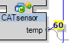
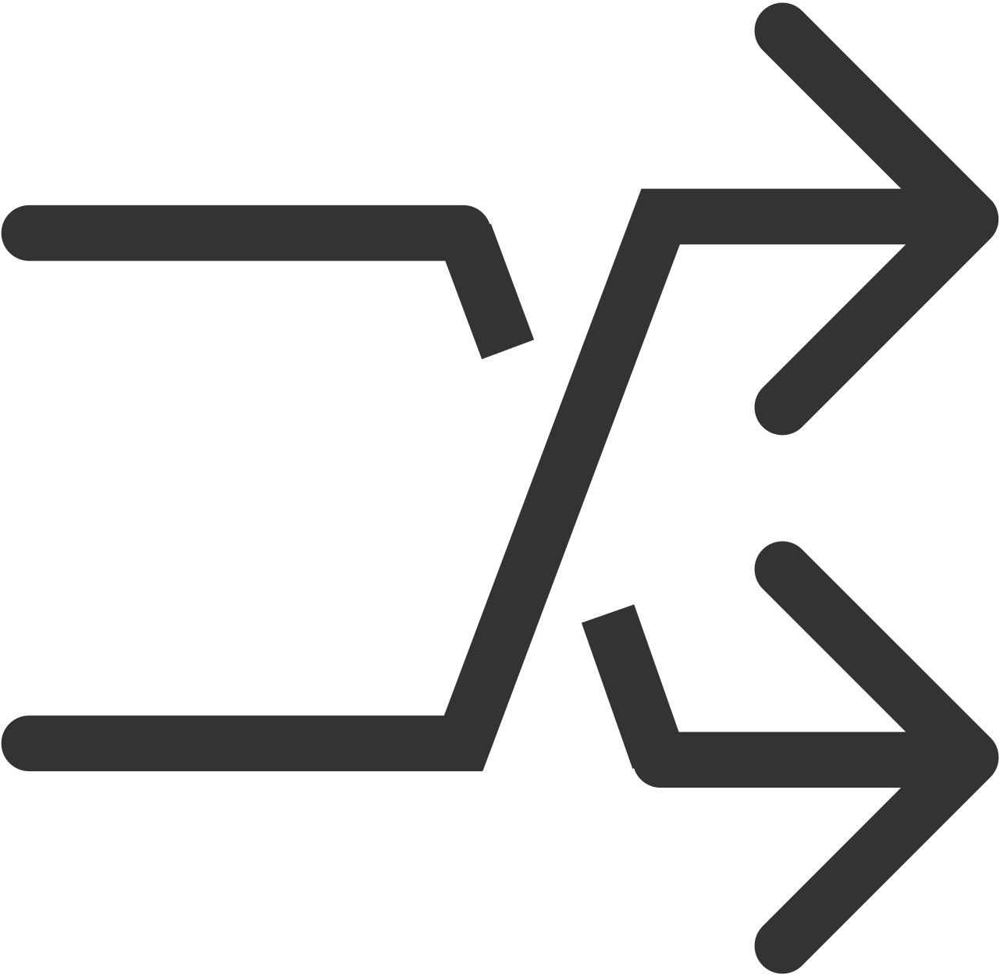

1. Event and Data Port Actions
Event and Data port context menu actions include:
|
Command |
Port Type |
Description |
|---|---|---|
|
Watch |
Data & Event |
Switches watching state of the respective port on or off. The currently watched or forced ports are also listed in the Watch pad. |
|
Trigger Event |
Event |
Triggers the respective event input - available only for inputs. |
|
Block Event |
Event |
Blocks the respective event port, no further event processing at this point. |
|
Reset Event Count |
Event |
Sets the event count to 0. |
|
Force Value |
Data & Event |
The selected data input changes from watching to forcing a value. Forced values will be displayed highlighted yellow in the application or resource view.

NOTE: Forced values will remain forced when you change to another view, log out or close EcoStruxure Automation Expert Buildtime.
Forced values have to be removed or switched back to Watch, in each case manually, when you do not need the force any more! To confirm that no force is active when leaving the plant, a check is indispensable. Values that are forced from within EcoStruxure Automation Expert Buildtime are displayed highlighted yellow at Watch pad.
NOTE: Direct forcing of values is only possible in 61499-context. For technical reasons, the values of 61131 blocks cannot be forced directly on the runtime. However, it is possible to check the 61131 blocks in the test container, also by the use of overwrite values, for their correct operation (see Testcontainer for Basic function blocks).
|
|
Go To |
Data & Event |
Shows the function blocks connected to this port and selects and shows the one that has been chosen |
|
Routing Linker |
Data & Event |
Clings a connection of this port to the mouse cursor, for comfortably routing to the desired FB |
|
Connections... |
Data & Event |
Opens a sub menu containing one DropDown menu for each existing connection of this port, and also the icons for editing the connection, as listed beneath. Using the DropDown menu the connection can be rearranged directly to another port. Furthermore a second DropDown menu is available here, to create new connections by choice or direct entry. |
Connections menu icons include:
|
Icon |
Description |
|---|---|
|
|
Go To, same function as described in table above |
|
 |
Enables or disables Cross Reference, which displays the connection view without a drawn line; this improves the readability in case of long, confusing connections. |
|
|
Removes this connection |